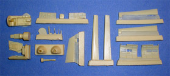
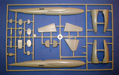
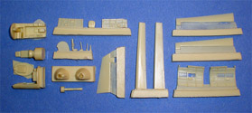

{kind=link}
{kind=link}
{kind=link}
{kind=link}
You may click on these small images to view larger pictures

{kind=link}

Special Hobby 1/72 Mitsubishi Ki-83
Kit #72157 MSRP $46.00
Images and text Copyright © 2009 by Matt Swan
Developmental Background
In 1943 the Japanese Army Air Force awarded a contract to Mitsubishi Jokogyro K. K. to develop a single engine long range, high altitude fighter. The design team headed by Tomio Kubo was not able to fulfill the contract requirements in a single engine design so the program evolved into a twin engine airframe with very clean lines. The initial design proved very promising and four airframes were constructed for testing. By using the new turbocharged Mitsubishi Ha.211ru 18-cylinder radial engines outputting 2200 hp each it was hoped the aircraft would easily exceed 400 mph and this object was realized very quickly when the first prototype took to the air 18 November 1944.
The aircraft proved itself to be not only very fast but very maneuverable. It was able to perform a 2200 foot diameter loop in 31 seconds at 400 mph. It featured a heavy armament package with two 30mm cannons and two 20mm cannons in the nose and could carry two 50kg bombs. The aircraft was designed to carry a crew of two with the pilot in a standard position and a radio operator/observer stationed in the fuselage behind the wing. The prototype aircraft were all undergoing flight testing when the war ended and American personnel were very surprised and interested in the units. At least one was shipped back to Freeman Field in Indiana for further testing. During initial testing the Japanese were using low octane fuel and achieved a top speed of 416 mph, at Freeman Field with the use of better 115/145 octane fuel the test aircraft actually reached a maximum speed of 470mph. This aircraft had the potential to be one of the most outstanding heavy long range fighters of the war, a potential that was never to be realized.
The Kit
The last couple Special Hobby kits I have picked up came in the two-part box we see most commonly used for model packaging however this one is of the end-opening box made of very light duty cardboard. This does not provide for good stash survivability nor does it give the modeler a parts collection box during construction. Inside we have a large poly bag containing three medium sized sprues of low pressure injection molded parts and a small sprue of clear parts. A second small zip-lock bag full of resin goodies and a photo etched sheet. Included with the photo etched sheet is an acetate instrument detail sheet.
Looking at the injection molded pieces first I have mixed feelings. On the positive side there seems to be lots of detail pieces, more than I would expect from a 1/72 scale, especially one that include resin details. The large surface areas of the fuselage and wings display smooth even surfaces with somewhat heavy engraved panel lines. The panel lines fade out a little as they approach the outer edges of the parts and will need to be corrected during assembly. During test fitting the panel lines seem to mate up well. Sprue gates are medium to heavy and there is a persistent light level of flash throughout the kit. All parts also contain a medium to heavy mold separation seam. Nowhere could I find any sink marks, nasty injection pins or incomplete casting so that is all good news. The clear parts do not suffer from the flash or mold seams that the other pieces do, show good clarity and well defined raised frame lines. The main canopy is only provided as a single closed piece so to display it open will require some careful cutting or maybe even vaccing a new, thinner replacement. Overall it is obvious that some serious clean-up work is going to be required.
The resin goodies offer a major upgrade in interior details however I have to wonder if you would even be able to see any of this stuff once the model is complete. Within the resin package are well detailed sidewalls for the front office along with an exceptional looking observer/radio operator’s station. Sadly this station is so buried within the fuselage with only tiny little windows that I don’t believe you would have any chance of seeing this great detail so the modeler should be sure to take lots of pictures during construction. The resin package also contains flight control surfaces and a couple nicely cast exhaust manifolds. The resin quality is very good and most connection points to the pour blocks are fine and easily removed.
Finally we have the small photo etch fret, here we have the primary instrument panel with accompanying acetate detail sheet. While this stuff is indeed beautiful and properly scaled at this level unless you are right on it you will never see it and with that closed canopy, well …. I just don’t know what else to say. The PE fret also includes seat belts and flight surface hinges – all very nice stuff. Overall we get twenty seven PE pieces, one acetate piece, twenty two resin detail pieces, six clear parts and seventy four light gray injection molded pieces for a total parts count of one hundred thirty pieces.

You may click on these small images to view larger pictures

Decals and Instructions
The kit instructions arrive as a ten page booklet that opens with some historical information on the aircraft type in both Czech and English. It includes a complete parts map of all the plastic, resin, PE and acetate components along with a brief paint chart using Gunze color codes. We get eleven exploded view assembly steps that include some construction tips on the PE parts and a fair amount of color call-outs. Three pages are devoted to exterior painting and decal placement.
The kit decals contain markings for three aircraft; one is a proposed 1946 Tokyo Defense aircraft in a natural metal finish, the second is for the test aircraft flown in November 1944 by Lt. Royzaburo Umekawa and the last is the same aircraft but in the markings applied by the US for it’s flight evaluation. The decals appear to be very nicely thin with excellent print registry and good color density. Previous experience with Special Hobby decals indicates they should snuggle down nicely with standard setting solutions.
Conclusions
In truth this is not a new kit but is simply the older MPM kit repopped with some nice resin and PE add-ons. The general fit is fair with some slight attention needed to thinning the dorsal observation window in the fuselage. The detail level, while pretty amazing for this scale, is mostly going to be lost from view when the model is completed. The only aftermarket item for this kit is an engine set from Engines and Things but considering the poor quality of that set I would not even open my wallet for it. Kit instructions are good and the decals sheet is adequate for the job. The Special Hobby kit looks like a fun build but if you want to build this with a little less cash out of pocket and don’t especially care about the highly detailed interior then just wait for the reissue for the original MPM kit which should be in stores by mid 2009. Overall I do give the kit a fairly good recommendation but that is more based on subject rarity and the cool interior package – not on ease of assembly.


{kind=link}